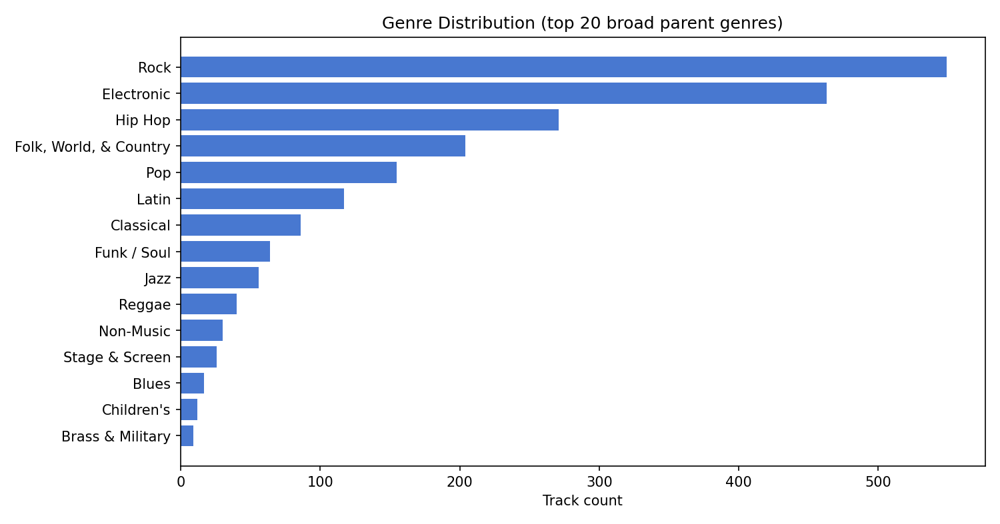
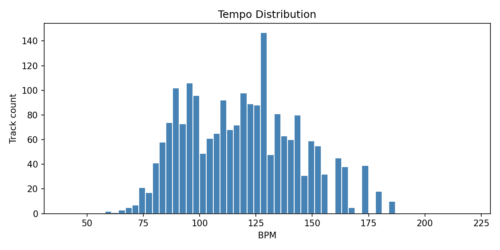
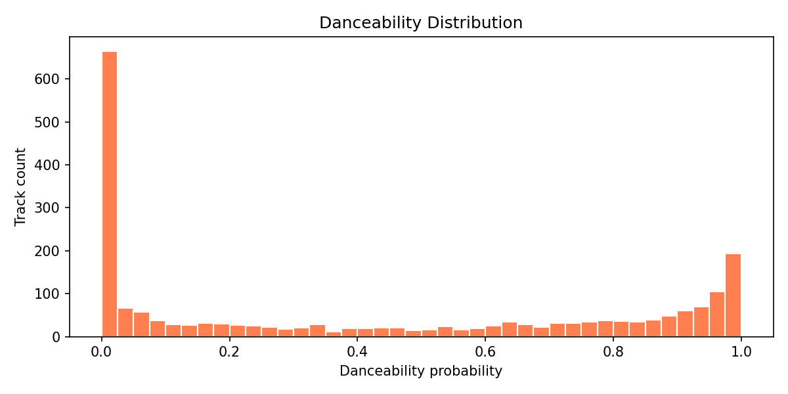
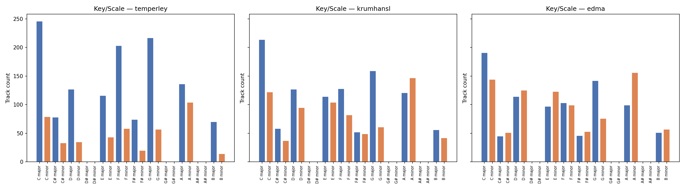
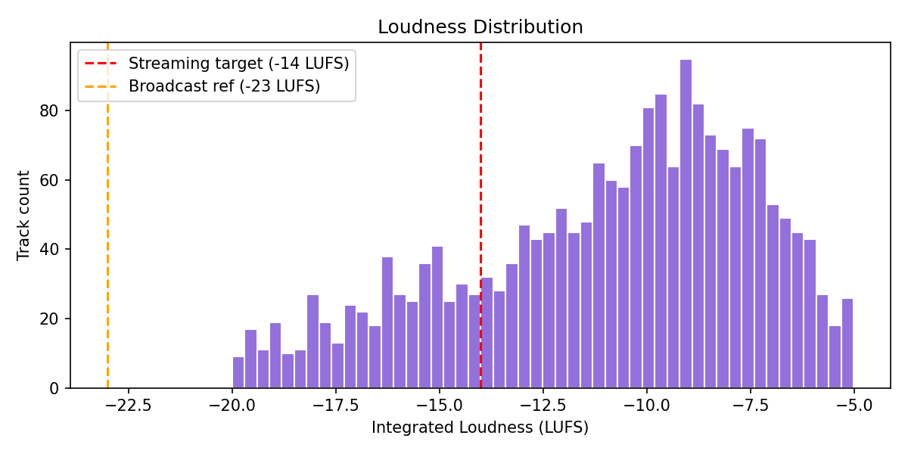
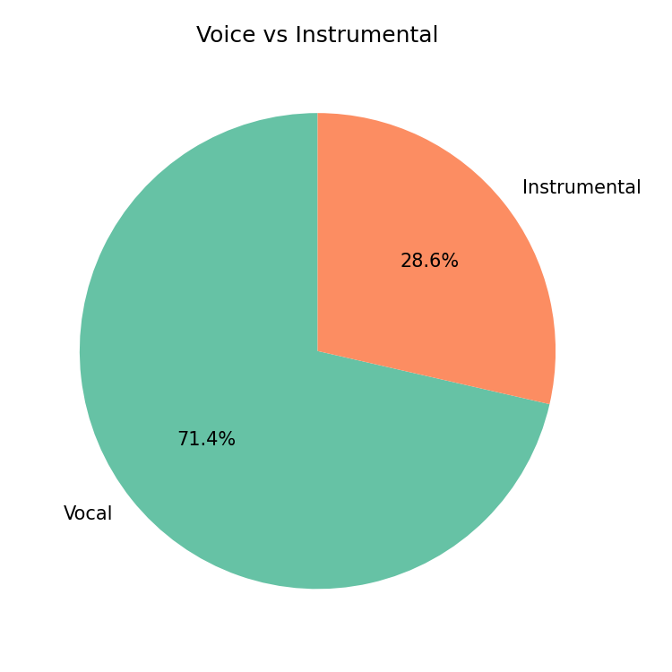

Collection: report_musav
Tracks analysed: 2099
| Metric | Value |
|---|---|
| BPM (mean ± std) | 119.155 ± 25.158 |
| Loudness LUFS (mean ± std) | -10.966 ± 3.552 |
| Danceability (mean ± std) | 0.418 ± 0.395 |
| Voice prob (mean ± std) | 0.684 ± 0.338 |
Key-profile agreement (all 3 match): 1030/2099 = 49.1%





